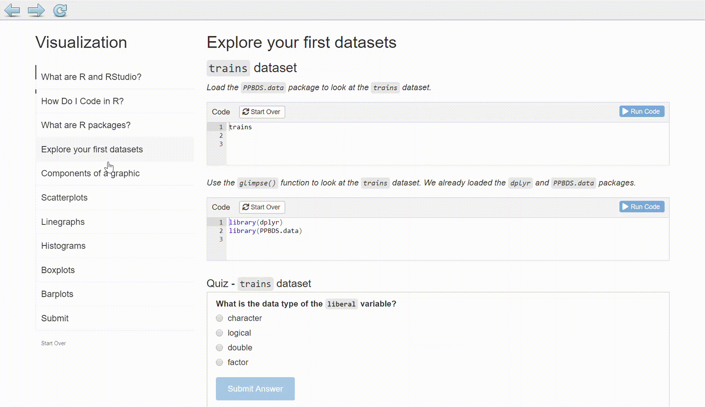

Shopping Week
The usual touchstone of whether what someone asserts is mere persuasion or at least a subjective conviction, i.e., firm belief, is betting. Often someone pronounces his propositions with such confident and inflexible defiance that he seems to have entirely laid aside all concern for error. A bet disconcerts him. Sometimes he reveals that he is persuaded enough for one ducat but not for ten. For he would happily bet one, but at 10 he suddenly becomes aware of what he had not previously noticed, namely that it is quite possible that he has erred. -— Immanuel Kant, Critique of Pure Reason
The world confronts us. Make decisions we must.
Warning
This book is not the book you are looking for.
First, the book is for students in Gov 50: Data and Gov 52: Models, courses offered in the Government Department at Harvard University. Everything about the book is designed to make the experience of those students better. Some of the material here may be useful to students outside of this class, but I don’t really care if it is.
Second, the book changes all the time. It is as up-to-date as possible.
Third, I am highly opinionated about what matters and what does not. It is unlikely that you share my views.
0.0.1 Install R and RStudio
FIGURE 0.1: Analogy of difference between R and RStudio.

Throughout this book, we assume that you are using R via RStudio. R is like a car’s engine while RStudio is like a car’s dashboard.
More precisely, R is a programming language that runs computations, while RStudio is an integrated development environment (IDE) that provides an interface by adding many convenient features and tools. So just as the way of having access to a speedometer, rearview mirrors, and a navigation system makes driving much easier, using RStudio’s interface makes using R much easier as well.
You will first need to download and install both R and RStudio (Desktop version) on your computer. Install R first and then install RStudio.
You must do this first: Download and install R.
You must do this second: Download and install RStudio.
0.0.2 Using R via RStudio
FIGURE 0.2: Icons of R versus RStudio on your computer.

Recall our car analogy from earlier. Much as we don’t drive a car by interacting directly with the engine but rather by interacting with elements on the car’s dashboard, we won’t be using R directly but rather we will use RStudio’s interface. After you install R and RStudio on your computer, you’ll have two new programs (also called applications) you can open. We’ll always work in RStudio and not in the R application.
If you can’t get R and R Studio working on your computer, you may use RStudio Cloud as a backup plan. Click on this link to go to a pre-created project which is already set up for you. You will need to sign up for a free account. You can go straight to the Tutorial section. You do not need to install anything.
Now, let’s begin with getting familiar with RStudio. Begin by opening up RStudio. After you open RStudio, you should see three panes, or panels, dividing the screen: the console pane, the files pane, and the environment pane. Over the course of this chapter, you’ll come to learn what purpose each of these panes serves. You should see something like this:

(Note that slight differences might exist from the figure if the RStudio interface is updated after 2019 to not be this by default.)
This is your workspace! You can see three main windows right now. Let’s focus on the big one on the left:

There are three tabs in this window, we’ll be focusing on the Console and Terminal. When you first start R, the Console gives you some information about your version of R. At the time when this was written, 4.0.1 was the latest version of R! The Console is where you can type and run R code. For example, if you type 1 + 1 and hit return, the Console returns 2.
Next, let’s move to the top right:

Here, the main two tabs you’ll be using is Environment and Git (Not Pictured Yet). The Environment tab shows you the datasets and variables you currently have loaded into RStudio. In my case, I loaded in a dataset with 3407 rows and 5 columns and a variable x equal to 5. For you, the Environment should be empty, so let’s change that!
To create your first variable in RStudio, go to your Console and type:
x <- 5Now, hit return/enter and you should see a variable x equal to 5 in your Environment! You must always hit return/enter after typing a command, otherwise RStudio will not realize that you want R to execute the command. The bottom right window:

Here, the Files tab will allow you to see your computer’s file system. When you create a project later, this tab will automatically show the contents in your project folder. The plots tab will show you a preview of any plots you make later on in RStudio. Packages shows all the packages you have installed in RStudio so far. Help will be explained later in this chapter.
0.0.3 Initial Set Up
If you are working on your own computer, copy and paste the following in to the R Console:
options(pkgType = "binary")
rstudioapi::writeRStudioPreference(name = "load_workspace", value = FALSE)
rstudioapi::writeRStudioPreference(name = "save_workspace", value = "never")Do not run these functions if you are working on RStudio Cloud.
The first causes R to download binary (i.e., pre-built) packages by default. Without this option set to “binary,” you will occasionally be asked by R:
Unless you have a good reason not to, always answer “no” to this question.
The rstudioapi commands set sensible defaults for working with RStudio.
0.0.4 Package installation
Another point of confusion with many new R users is the idea of an R package. R packages extend the functionality of R by providing additional functions, data, and documentation. They are written by a worldwide community of R users and can be downloaded for free from the internet.
For example, among the many packages we will use in this book is the ggplot2 package for data visualization.
FIGURE 0.3: Analogy of R versus R packages.

R is like a new mobile phone: while it has a certain amount of features when you use it for the first time, it doesn’t have everything. R packages are like the apps you can download onto your phone from Apple’s App Store or Android’s Google Play.
Let’s continue this analogy by considering the Instagram app for editing and sharing pictures. Say you have purchased a new phone and you would like to share a photo you have just taken with friends on Instagram. You need to:
- Install the app: Since your phone is new and does not include the Instagram app, you need to download the app from either the App Store or Google Play. You do this once and you’re set for the time being. You might need to do this again in the future when there is an update to the app.
- Open the app: After you’ve installed Instagram, you need to open it.
Once Instagram is open on your phone, you can then proceed to share your photo with your friends and family. The process is very similar for using an R package. You need to:
FIGURE 0.4: Installing versus loading an R package

- Install the package: This is like installing an app on your phone. Most packages are not installed by default when you install R and RStudio. Thus if you want to use a package for the first time, you need to install it first. Once you’ve installed a package, you likely won’t install it again unless you want to update it to a newer version.
- “Load” the package: “Loading” a package is like opening an app on your phone. Packages are not “loaded” by default when you start RStudio on your computer; you need to “load” each package you want to use every time you start RStudio.
Let’s perform these two steps for the ggplot2 package for data visualization.
Type install.packages("ggplot2") in the console pane of RStudio and pressing Return/Enter on your keyboard. Note you must include the quotation marks around the name of the package.
R packages generally live in one of two places: CRAN (rhymes with “clan”) for more mature, popular packages and Github for more experimental, less stable packages. install.packages() gets packages from CRAN. At the end of this section, we will also be installing packages from development.
0.0.5 Package loading
Recall that after you’ve installed a package, you need to “load it.” In other words, you need to “open it.” We do this by using the library() command.
For example, to load the ggplot2 package, run the following code in the console pane. What do we mean by “run the following code”? Either type or copy-and-paste the following code into the console pane and then hit the Enter key.
If after running the earlier code, a blinking cursor returns next to the > “prompt” sign, it means you were successful and the ggplot2 package is now loaded and ready to use. If, however, you get a red “error message” that reads ...
Error in library(ggplot2) : there is no package called ‘ggplot2’... it means that you didn’t successfully install it. This is an example of an “error message”. If you get this error message, go back to the subsection on R package installation and make sure to install the ggplot2 package before proceeding.
For historical reasons “packages” are also known as “libraries,” which is why the relevant command for loading them is library().
0.0.6 Package use
One very common mistake new R users make when wanting to use particular packages is they forget to “load” them first by using the library() command we just saw. Remember: you have to load each package you want to use every time you start RStudio. If you don’t first “load” a package, but attempt to use one of its features, you’ll see an error message similar to:
Error: could not find functionThis is a different error message than the one you just saw on a package not having been installed yet. R is telling you that you are trying to use a function in a package that has not yet been “loaded.” R doesn’t know where to find the function you are using. Almost all new users forget to do this when starting out. However, you’ll remember with practice and after some time it will become second nature for you.
Now, we will be installing a package which is not available from CRAN: PPBDS.data. Copy and paste the following to the R Console:
This will result in many new packages being installed. It may take a minute or two. If something gets messed up, it is often useful to remove.packages() the problematic package and then install it again.
If you are working on RStudio Cloud, none of these steps were necessary. We did everything for you already. Warning! First, your interim work is not saved when you do a tutorial RStudio Cloud. So, although it is fine to do Tutorial 0 there, you should not use it for later tutorials. Second, you will almost certainly need to get R and RStudio set up on your computer. Start now!
0.0.7 Tutorials
For each chapter of the textbook, there is a corresponding tutorial available in the PPBDS.data package. In order to access these tutorials, follow these steps:
- Run
library(PPBDS.data)in the R Console.

- You can access the tutorials via the Tutorial pane in the top right tab in RStudio. Click “Start tutorial” for the “Shopping Week” tutorial.

In order to expand the window, you can drag and enlarge the tutorial pane inside RStudio. In order to open a popup window, click the “Show in New Window” icon next to the home icon.
You may notice that the Jobs tab will create output as the tutorial is starting up. This is because RStudio is running the code to create the tutorial. If you accidentally clicked “Start Tutorial” and would like to stop the job from running, you can click the back arrow in the Jobs tab, and then press the red stop sign icon.
- Your work will be saved between sessions, so you can complete the tutorial in multiple sittings. In order to complete the tutorial successfully, make sure you enter your name at the very beginning and answer all questions. Once you have completed the tutorial, follow the instructions on the tutorial
Submitpage and upload the resultingresponses.rdsfile to Canvas.
Tutorials are graded pass/fail. It is very hard to fail. As long as you make an honest attempt, you will pass easily.

You’ve finished a tutorial! Now what? There are a few ways you can close out of a tutorial safely so you can quit your RStudio session.
- If you clicked “Show in new window” and were working on the tutorial in a pop-up window, simply X out of the pop-up window
- If you were working on the tutorial inside the Tutorial pane of RStudio, simply press the red stop sign icon
Page built: 2020-08-05